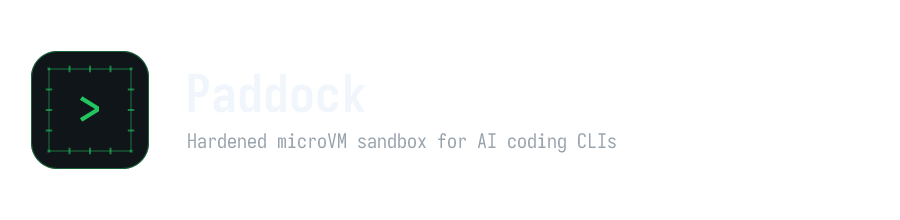

Why container namespaces fall short for autonomous agent execution
Defense-in-depth with zero background daemons
One entry point, one flag list
podman container runlabel run paddock:latest# 1. Launch sandbox in the current folder
paddock run
# 2. Verify microVM isolation inside guest
id # non-root user 'ai' (UID/GID 1000)
uname -r # guest's own kernel (compare with host)
nproc; free -m # capped vCPUs and RAM
ls /sys/class/net # virtual NIC only, no host interfaces
# 3. Run an assistant in a project subfolder (opencode or gemini)
paddock run -w myproject opencode -cGitHub: github.com/baierjan/paddock
Questions & Discussion